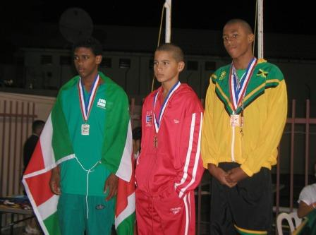
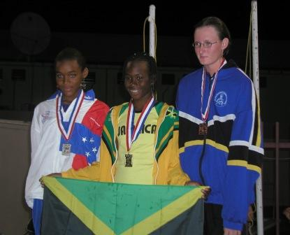

|
|
||||||||||||||||||||
| Home | ||||||||||||||||||||
|
2006
Archived Stories
Jan | Feb
| Mar | Apr
| May | Jun |
Jul | Aug |
Sep | Oct |
Nov | Dec
December
26, 2006
-
The Amateur Swimming Association
of Jamaica for the 2nd time will be
hosting Coach Rob Emary of Broward Aquatics Swim
Club in Fort Lauderdale who with with the
assistance of local coaches, will be running a
Swim Camp for National Squad Swimmers
from Wednesday December 27th to
Saturday December 30th....press
release
December
19, 2006
- All swimmers registered for 2006 will be
eligible to swim in the Blue Seals Meet in
January. New and transferred swimmers for 2007
must be registered by December 29th.....Full
Release
December
18, 2006
- Tornadoes Swim Club won the Age Group Gold
Las Lic meet which concluded on Sunday.
Tornadoes amassed 1523 points followed by
Y'Speedos with 1132 points and Blue Seals with
679 points.....Results
December
2, 2006
-Hillel
Academy with balanced scoring from their
male and female swimmers won the 2006 Complan
Prep and Primary School competition. Hillel
amassed 479 points while Immaculate Prep
scored 322.5 to finish second overall and
Wolmers Prep third with 279.5. Immaculate
easily won the Girls Division ahead of Hillel
(167) and St. Peter and Paul (126). Hillel
was the top dog in the Boys division while
Wolmers and St. Peter and Paul again
finishing second and third. Excelsior Primary
scored 38 points to capture the Complan Primary
School Trophy.....results
December
2, 2006 -The
Complan Prep Schools Swim Meet will dive into
action today at the National Stadium Pool
December
1, 2006 -
Campion College and Immaculate High
today dominated the male and female divisions
respectively to capture the Championship
Trophies at the ISSA Schools Swim Meet
held at the National Stadium Pool. Campion
scored 353 points, holding Wolmers Boys
to 266 and Kingston College in third with
191. Immaculate High scored 369 points to hold
the reigns in their rivalry with St Andrew
High (285.5) who finished second while the
Campion Girls placed third with 210....results
November
29, 2006 -
Jamaica's National
Senior Squad Swimmers
Ramon James, Matthew
Hilton and Dominique
Dawson leave
tomorrow to compete in
the
2006 Holiday Classic
Invitational Swim Meet
hosted by the Gator Swim
Club at the University
of Florida,
Gainesville
Nov
22, 2006
- Jamaica will be
hosting the next
CARIFTA Swimming and
Synchronized Swimming
Competitions at
the National Stadium
Pool April 7-11, 2007.
350 athletes are
expected to participate
in the annual
Championships.
Nov
11, 2006
- The Tornadoes Swim
Club today won the
Walter Lowi Swim Meet by
just 6 points. The
results will be posted
later.
Nov
3, 2006
- Jamaica's Alia
Atkinson swam
incredibly fast with a
PB 1:00.17 in the 100 Y
Breaststroke and another
in the 200 Y
Breaststroke (2:14.91)
to help Texas A&M defeat
the University of Texas
in a dual meet....more
Nov
1, 2006
- Tornadoes Swim Club
successfully defended
the "AB" Long Course
Classic trophy in the
swim meet held October
27-29. Y-Speedos was a
close second with Blue
Seals coming in third
.....results
Oct
27, 2006
- Alia Atkinson
and Natasha Moodie
(Comet Swim Team) in
USA Swimming 2005-06
Top 16 List....more....USA
Swimming Girls Top 16
List ...
Click here for more
info on USA Swimming
Top 16 Programme
Oct
27, 2006
- Two swimmers have been
added to the National
Squad. Ramon
James qualified for
the Senior Squad with a
1:00.72 at the Summer
Age Group Champs
(somehow his time was
not presented by Team
Manager - we apologize
Ramon). Rohan Johnson,
who attends school in
the USA, qualified for
the Junior Squad
swimming 50.13 in the
100 yards Freestyle
(58.90 LCM converted).
Congratulations to both
swimmers.
Oct
26, 2006
-
2008 OLYMPIC GAMES
FINALS TO BE SWUM IN THE
MORNING....The
IOC has decided to hold
the 2008 Olympic Games
swimming finals in the
morning bowing to
pressure from US
television
broadcasters....click
here for an opposing
view
FINA'S STATEMENT
"FINA acknowledged and
respects the IOC
decision to schedule in
the morning the swimming
finals at the 2008
Olympic Games in Beijing
(CHN)."
"FINA always clearly
stated in preference for
the Swimming Finals to
be held in the evening,
as in its major swimming
competitions."
"FINA will work very
hard with its 194 Member
Federations and
respective athletes and
coaches to assure the
best possible Swimming
Competition at the 2008
Olympic Games in Beijing
(CHN)."
Oct
22, 2006
- Coach Leah Martindale
left the island today
after completing a
Stroke Clinic today for
55 swimmers at the
National Stadium Pool.
The Clinic, which was
hosted by the ASAJ and
organized by Swimming
Technical Director
Jackie Walter is the
first in a series of
quarterly clinic for
Jamaica age group
swimmers. Martindale,
who is currently
Coaching at the
University of South
Carolina, is a Barbadian
who first swam for her
country as a relay
swimmer at the National
Stadium Pool.
Oct
18, 2006
- The ASAJ Council has
ratified the Swimming
Selections Committee
recommendation that 54
swimmers (now 56 see
release Oct 30) be offered a
place on Jamaica's
National Senior, Junior
and Development
Squads....full
list
There are no stories for
September
Aug
7, 2006
-
Jamaican Junior Women's
Water Polo Team go down
15-1 to Brazil at 2006
Pan Am Junior Champs in
Montreal....results
Aug
6, 2006
-
Jamaica's Natasha Moodie
swims at fast 26.84 to
take the 15-18 50 M
Freestyle Gold Medal at
the 2006 USA Southern
Zone AG Championship
held at the Georgia Tech
Aquatic Center.....more
Aug
6, 2006
-
Jamaica's Male and
Female Team's lose
opening games at Pan Am
Water Polo Champs ....results
Aug
5, 2006
-
Jamaica's Junior Male
and Female Water Polo
Teams will play their
first games at the
Pan Am Water Polo
Championships
tomorrow against Brazil
and Mexico respectively.
The Jamaica-Mexico
Female game will be the
first game of the
competition starting at
8:00 AM (Jamaica time)
while the Jamaica-Brazil
Male Game will begin at
2:30 PM. The full
schedule will be
published by the
Organizing Committee
later this evening.....more
Aug
4, 2006
-
Jamaica's Male and
Female Junior Water Polo
Team's leave for
Montreal to participate
in the Pan Am Junior
Water Polo Championships....more
July
31, 2006
- INSPORT TO THE RESCUE
AGAIN! The Prime
Minister and Minister of
Sport, the Hon. Portia
Simpson-Miller, through
INSPORT, this
evening handed a JA$1.0
million check to ASAJ
President John Eyre to
help defray the cost of
sending Jamaica's Junior
Male and Female Water
Polo Teams
to Montreal. This will
go a long way to closing
the current deficit of
JA$2.6 million. With the
Prime Ministers help,
the ASAJ has been making
good progress is funding
ways to close the gap.
July
27, 2006
- Jamaica's
participation in the
PAN AM Junior Water Polo
Championships to be
held in Montreal, Canada
starting August 6th is
in jeopardy due to a
massive shortfall in
funding....click
here for press release
July
24, 2006
-
ASAJ President John
Eyre was been elected to
the position of CCCAN
Secretary during the CCCAN Congress held in
Cartagena, Columbia....more
July
23, 2006
- Alia's Atkinson's 4
Gold and 1 Silver Medal
places Jamaica in 4th
Place in the 2006 CAC
Games swimming
competition. Mexico,
Venezuela and Barbados
were the top three.....standings
July
13, 2006
- Jamaica's 7 member
National Swim Team
departed today for
Cartagena, Columbia
where they will
participate in the
2006 CAC Games. The
team comprises 5
swimmers: Alia Atkinson,
Brad Hamilton, Dominic
Lee, Travis Forte and
Jonathan Wong, Coach
Jackie Walter and
Manager Merlene
Hamilton. ASAJ President
John Eyre, who will be
attending the as a
Swimming Judge, will
depart Jamaica on
Saturday July 15.
July
11, 2006
- The ASAJ is seeking
persons to act as life
guards and perform
administrative work for
the summer programmes at
the National Stadium
Pool. Interested persons
should complete the
ASAJ Application for
Employment form and
submit it to the
ASAJ Office as soon
as possible.
June
29, 2006
- Brad
Hamilton last night
smashed Allan Marsh's 26
year old Senior National
and National Age Group
200 M Butterfly records
swimming 2:06.72 at the
2006 Caribbean Island
Swimming Championships.
Meanwhile, Kendese
Nangle looks set to
be Jamaica's top female
Backstroke swimmer as
she breaks the CISC
Meet, and 11-12 National
Age Group records twice
in one day....more
June
28, 2006
- Jamaica's Matthew
Hilton last night struck
Gold in the CISC 2006
15-17 200 M Breaststroke
swimming 2:36.45. Brad
Hamilton swam 58.10
broke Jamaica's National
Age Group 15-17 100 M
Butterfly record. He is
now just .70 away from
Sion Brinn's National
Record....more
June
28, 2006
- CORRECTION!! -
Jamaica's CISC Day One
Medal Tally was in fact
seven (7). Yesterday's
report omitted to
include a great Bronze
Medal swim by David
Bromfield in the
11-12 100 M Backstroke
who timed a personal
best 1:12.79. Well done
David!!
 David
Bromfield accepts his
Bronze Medal
June
27, 2006
- Jamaica has a good
start to the 2006
Caribbean Island
Swimming Championships
being held in Puerto
Rico reaping 6 medals (2
Gold and 4 Silver).
Kendese Nangle smashes
her own 11-12 100 M
Backstroke Jamaican
National Age Group
Record....more

June
10, 2006
- Immaculate Prep
School, Wolmers Prep and
Naggo Head Primary today
walked away with top
hounors at the Nestle
Ice Cream School
Swimming Championships.
Immaculate
won the Nestle Shield
and the Girls High Point
Trophies while Wolmers
Prep claimed the Boys
High Point trophy, Naggo
Head won the Primary
School division and
the Nestle Spirit
Trophy. Four records
were broken with
Immaculate's Alexia
Royal-Eatmon smashing
the 9-10
50 M Breaststroke and 10
& Under 200 M IM
meet records.....results
June
5, 2006
- Jackie Brown, wife of
Coach Barry Brown died
last night of cancer.
Our thoughts and prayers
are with Coach Brown,
Ben and Jhanelle (his
children) and other
family members
June
1, 2006
- The ASAJ has launched
Jamaica's first Swim
Coaches Certification
programme by adopting
the certification
provided by the
American Swim Coaches
Association (ASCA)
through the
World Swim Coaches
Association (WSCA).
Jamaican Swim Coaches
can now join WSCA and
complete the 5 levels of
certification at their
convenience.
May 18, 2006
- NATIONAL X
restarted! As
Jamaica's swimmers
prepare for the CISC and
CAC Games this summer,
Jackie Walter (Technical
Director, Swimming) has
restarted the National X
training programme.
Click here for more
details
May 18, 2006
- Fourteen swimmers from
the Tornadoes Swim Club
will leave the island
today to participate in
the 2006 Kent B. Holdren
Memorial Swim Meet being
held in Sarasota,
Florida....more
May 18, 2006
- The ASAJ is to host a
FINA Development Swim
Coaches Clinic May
31 - June 4, 2006.
ASCA's Matt Hooper will
be the main presenter.
Local and Overseas
participants are
invited....click
here for more
information
May 12, 2006
- St. Richards Primary,
Immaculate Conception
Prep and Hillel Academy
take top honours at 2006
Burger King/YMCA School
Swim Meet....full
results
May 5, 2006
- The Tornadoes Swim
Club tonight won the
2006 Junior Swimming
Championships with a
narrow margin over the
Y-Speedos Swim Club. The
Blue Seal Swim Club
finished third....results
May 5, 2006
- The Tornadoes Swim
Club increases it lead
ever so slightly as Day
2 of the 2006 ASAJ
Junior Swimming
Championships comes
to a close.....results
May 5, 2006
- The Tornadoes Swim
Club has a slim 3 point
lead over rivals
Y-Speedos after Day 1 of
the
2006 Junior Swimming
Championships
being held at the
National Stadium Pool.
Dominic Lee (Tornadoes)
and Ramon Walton
(Y-Speedos) set new Meet
Records......more......results
May 3, 2006
- NOTICE TO TEAMS
PARTICIPATING IN THE
2006 ASAJ JUNIOR
SWIMMING CHAMPIONSHIPS -
the 10 & Under 100 M
Freestyle will be swum
as events 3 & 4 on
Friday May 5th. Events
59-60 will be deleted
May 2, 2006
- The
2006 ASAJ Junior
Swimming Championships
will dive into action on
Friday May 5th at the
National Stadium Pool.
The first event will be
at 6:00 PM. 404 swimmers
from eight clubs will
participation. The meet
will add a new dimension
to the swimming calendar
as all 11-12 and 13 &
Over 50 M and 100 M
events will be swum with
the preliminary heats in
the morning and an A and
B Final in the evening.
APRIL 22, 2006
- Tornadoes Dominic Lee
and Stefan Brown win at
Winterhaven Eye Opener
Meet....more
APRIL 21, 2006
- St. Andrew Prep and
Campion College take top
honors at ADTECH
Inter-School
Synchronized Swimming
Competition....results
APRIL 20, 2006
- Sixteen (16) member
Tornadoes Swim Club Team
off to compete in the
2006 Winterhaven Eye
Opener Meet....more
APRIL 18, 2006
- The United States has
won the right to host
the 2007 FINA Men's
Junior Water Polo World
Championships.
The event will be held
at the California State
University Long Beach
and the USA Water Polo
National Training Center
in Los Alamitos, Calif.
August 19-27, 2007....more
APRIL 18, 2006
- The ASAJ will host the
3rd renewal of the
ADTECH Inter-Schools
Synchronized Swimming
Competition this
Friday and Saturday
(August 21 and 22).....more
APRIL 9, 2006
-
JAMAICA MINE 7 MORE
GOLD, 2 SILVER AND 5
BRONZE ON THE FINAL
NIGHT TO FINISH 2ND IN
THE 2006 CARIFTA
SWIMMING CHAMPIONSHIPS
MEDAL STANDINGS....more
CONGRATULATIONS TEAM!!!
APRIL 8, 2006
-
JAMAICA WINS GOLD DOUBLE
IN 2006 CARIFTA WATER
POLO....more
APRIL 8, 2006
- Alia Atkinson and Brad
Hamilton lead the way
with three Gold each as
Jamaica adds 12 more
medals on Day 3 of the
2006 CARIFTA Swimming
Champs....more
APRIL 8, 2006
- Jamaica hand Barbados
27-0 thumping and
qualifies for the 2006
CARIFTA Water Polo
Finals. The Male team
also qualifies for the
final despite a
agonizing 7-9 loss to
the Netherland
Antilles....more
APRIL 4, 2006
- Jamaica's 69 person
strong National Swim and
Water Polo Teams are set
to depart for Barbados
to compete in the
2006 CARIFTA Swimming
Championships....more
APRIL 3, 2006
-
The AD-Tech Schools
Synchronized Swimming
Meet has been
rescheduled for April 21
and 22 due to a clash
with a new international
meet which our swimmers
will be attending in
Curacao.....revised
summons
APRIL
3, 2006
- Nestle Jamaica Ltd.
will continue it's
long standing
relationship with the
ASAJ with the renewal of
its sponsorship for the
Nestle Ice Cream
Prep/Primary Schools
Swimming Championships
to be held June 9-10,
2006. More information
will be released soon.
MARCH 26, 2006
-
The Tornadoes Swim Club
has point surge on final
day to win the
Tornadoes Swim Club
Invitational Swim
Meet....more
MARCH 20, 2006
- Three World and
seven Games Records fall
on penultimate night of
Commonwealth Games
Swimming Competition.
What a night!...more
MARCH 20, 2006
- Jeremy Knowles
breaks Bahamian National
200 IM Record at
Commonwealth Games.
Hamilton places 23rd in
50 M Freestyle....more
MARCH 19, 2006
-
Alia Atkinson finishes
13th in the Commonwealth
Games 100 M Breast. Five
more Games Records
fall.....more
MARCH
19, 2006
- The Commonwealth
Games swimming
competition continued
today as Alia Atkinson
qualifies for 100 M
Breaststroke semi-final
and Brad Hamilton breaks
6 year old 15-17 100 M
Butterfly National Age
Group Record....more
MARCH
18, 2006
- Three swims for
Jamaica on day three of
the Commonwealth Games.
Cayman's Shaune Fraser
qualifies for 100 Free
semi-finals....more
MARCH
17, 2006
- Four Commonwealth
Games Records and one
EAD World Record
fall at Commonwealth
Games day two finals....more
MARCH
17, 2006
- Brad Hamilton swims
26.60 to set a new Men's
50 M Butterfly National
Record at the
Commonwealth Games. Alia
akinson and Tamara Swaby
swim in the
women's 100 M
Freestyle.....more
MARCH
16, 2006
- Alia Atkinson
smashes Jamaican
National 50 Breaststroke
Record again (32.59) and
is the 1st alternate for
tomorrows final. Seven
(7) Games Records fall
on Day 1 of the
Commonwealth Games in
Melbourne....more
MARCH
16, 2006
- Alia Atkinson
smashes 50 Breast
National Record and
moves into semi-final
at Commonwealth
Games....more
MARCH
15, 2006
- The
results for the Auto
Maintenance Ltd
Development Meet held on
Saturday March 11, 2006
has now been added to
the Result
Page
MARCH
14, 2006
-
Jamaica's
Commonwealth Games Swim
Team has settled
into e Games Village and
is making final
preparations for
tomorrows Opening
Ceremony and the
competition which starts
on Thursday....more
MARCH
11, 2006
-
Campion College today
won the ASAJ Inter
Schools Technical
Routines and Figures
Synchronized Swimming
Competition. St.
Andrew High was second
and Wolmers Girls
third....results
MARCH
9, 2006
-
Forty-five swimmers from
Wolmers Girls High, St.
Andrew High, Immaculate
High and Campion College
have entered the 1st
ASAJ Inter School
Technical Routines and
Figures Synchro
Competition that
will be held at the
National Stadium Pool,
March 10-11, 2006....more
MARCH
8, 2006
-
Jamaica's
Commonwealth Games Swim
Team will start
their long trek for
Australia when Coach
Jackie Walter and Alia
Atkinson leave Florida
today. They will travel
to Melbourne via Los
Angeles, arriving early
March 8th. Team Manager
John Eyre and Brad
Hamilton will depart
Jamaica on Saturday
March 11 and will be
joined in Los Angeles by
Tamara Swaby. The team
is scheduled to return
to Jamaica on March
23......GOOD LUCK
TEAM!
MARCH
6, 2006
-
Auto Maintenance Ltd, a
company offering
collision repairs and
automotive servicing,
will sponsor the March
11 Development Swim
Meet....more
Meet Invitation -
Company Info
MARCH
5, 2006
-
Wolmers Girls, Holy
Childhood and Wolmers
Boys today won their
divisions at the 3rd
Inter-Secondary Schools
Water Polo Competition
held at the National
Stadium Pool....results
MARCH
2, 2006
-
Jamaica's Todd Johnson
shines for Hamilton
College placing 3rd in
100 yard Backstroke in
51.30, qualifying for
the NCAA Division 3
Championships....moreMARCH
2, 2006
-
Rick Bishop, who Coached
Janelle Atkinson at the
1999 PAN AM Games, will
conduct a swim camp for
the 2006 CARIFTA Swim
Team...more
FEBRUARY
27, 2006
- USA
Water Polo Director
Sports Development, Mike
Lewis, this evening
conducted a Seminar
on Club Development
for eleven club leaders
at the Sports
Development Foundation's
Training Room....click
here to see his
presentation
FEBRUARY
26, 2006
- The
FINA/ASAJ Water Polo
Coaches Clinic
starts today with Mike
Lewis, USA Water Polo
Director Sports
Development, conducting
a class on Sports
Psychology. Later in the
day,
Coach Randal Burgess,
past USA National Junior
Team Coach, will begin
five days in instruction
with classroom time
being held at the JOA
Training Room and pool
time at the National
Stadium Pool.......more
FEBRUARY
25, 2006
-
What an exciting day for
everyone at the 2006
Mayberry Investments
Pre/Primary Schools Swim
Meet held at the
National Stadium Pool.
Congrats to Hillel
Academy who were
crowned Champions as
Wolmers Prep placed
second and Mona Prep
third. The competition
was fantastic in the
Primary School Division
but Excelsior Primary
edge a high spirited
Nago Head Primary
for the Mayberry Primary
School Champions Trophy.
Mona Prep are the
Prep/Primary Girls
Champion and Hillell
Academy the Boys
Champions....full
results
FEBRUARY
24, 2006
-
Jamaica's 2006 CARIFTA
Swim Team and Water Polo
Squads have been
announced....more
FEBRUARY
24, 2006
-
Immaculate High, Campion
College and the
University of the West
Indies today walked away
with the high point
trophies at the 8th
Mayberry Investments
High School and
University Swim Meet
held at the National
Stadium Pool.....full
results
Click here for Press
Release (PDF)
FEBRUARY
18, 2006
-
Brad
Hamilton (Tornadoes)
claims 4 of 9 Meet
Records smashed on day
three (3) of the Walter
Rogers Age Group
Swimming Championships
being held at the
National Stadium
Pool. Meanwhile,
the Tornadoes Swim Cub
widened their lead over
the defending Champions
Y-Speedos and third
place Stingrays of
Cayman......results
FEBRUARY
17, 2006
-
The
Tornadoes Swim Club has
increased their lead at
the 2006 Walter Rogers
Age Group Swimming
Championships as the
Tornadoes, Y-Speedos and
visiting Cayman Sting
Rays claim one Meet
record each....results
FEBRUARY 17, 2006
-
Mayberry Investments Ltd. today
increased their commitment
to Jamaica's schools swimming
programme and the
Mayberry Investment
Schools Swim Meet, when
a check valued at
JA$300,000 was handed
over to ASAJ President
John Eyre. The ....click
here for meet info
FEBRUARY
16, 2006
-
Tornadoes
Swim Club takes early
lead as the 2006
Walter Rogers Age Group Swimming Championships
dives into action.
Kendese Nangle, Jason
Adams, Dominique Dawson
and Dominic Lees smash four
(4) meet records and two (2) Age Group
Records ....results....records
Click here for the Day 1
Press Release
FEBRUARY
14, 2006
-
Coach Dianne Roestel
will be a guest coach
for the ‘Y’ Speedos Swim
Club between February 15
and 25. Coach
Roestel, who is visiting
Jamaica for the first
time has volunteered to
work with the Y Speedos
Swim Club during her
vacation time on the
Island....more
FEBRUARY
12, 2006
- Special thanks to
everyone who
participated in
yesterdays
Swim-A-Thon, Mini
Triathlon and Fun Day.
Feedback has been very
positive and we are
already looking as ways
to make the next one
bigger and better!. 45
athletes entered the
ASAJ first Mini
Triathlon -
congratulations to the
following Triathlon
Category winners:
Brianna Thompson, Daniel Harris, Dominique Dawson, Brian Forte,
Gillian Millwood,
Dominic Lee, Angela
Beckford and Patrick Lee...click
here for full results
FEBRUARY
6, 2006
- One of Jamaica's
premier financial
institutions,
Mayberry Investments
Limited, has
announced that it will
renew it's commitment to
schools swimming by
increasing the
sponsorship for the
Mayberry Investments
Schools Swim Meet which
will be held on February
24 and 25, 2006. The
meet is open to all
School swimmers,
including Universities
and Colleges.....click
here for entry
information
FEBRUARY
6, 2006
- The Junior Swimming
Championships
scheduled for May 5-7
will be swum in a heats
and finals format rather
than the Time Standards
format. All 11-12 and 13
and Over 50 M and 100 M
events will be heats and
finals while the OPEN, 8
and Under and 9-10
events will be timed
finals....see
the summons for more
details
JANUARY
31, 2006
- The ASAJ will be
hosting it's annual
Swim-A-Thon, Fun Day and
Mini Triathlon on
February 11 at the
National Stadium Pool.
The ASAJ hopes to raise
JA$1.0 million in
support of it's
development programme
and the 2006 CARIFTA
Team. To make the day
really exciting and fun,
there will be a number
of other really cool
events:
Click on the links above
for more information
JANUARY
29, 2006
- The Tornadoes Swim
Club today won the Karl
Dalhouse Memorial Swim
Meet for the first time
since 2001, scoring 1312
points. The host team,
Y-Speedos Swim Club
fought bravely to take
second place scoring
1122. The Blue Seals
Swim Club, lead by 11
year old Kendese Nangle,
seal third place with
540 points.
Congratulations to the
Y-Speedos Swim Club for
a very well run
meet......results
JANUARY
20, 2006
- The Government of
Jamaica, through INSPORT,
has announced and
agreement with Cuba for
five (5) coaches to
assist with the
development of swimming,
basketball, volleyball,
boxing and hockey in
Jamaica. Swim Coach
Orlando Estrada, who was
here in a previous
contract in 2003, has
returned on a two year
contact.
JANUARY
19, 2006
- The
Mayberry Investments
Schools Meet Summons
has been posted to the
website. Please note
that the High
School/University Meet
will be held on Friday
February 24 and the
Prep/Primary School Meet
on Saturday February 25.
Please read the
meet summons
carefully as there have
been a number of
significant changes
JANUARY 14, 2006
- The Tornadoes Swim
Club launched the 2006
ASAJ Swim Meet Calendar
with the Tornadoes
Distance Development
Meet today at the
National Stadium Pool. A
number of swimmers made
good use of the
opportunity to make
their CARIFTA 2006
qualifying times....results
|
|||||||||||||||||||
|
|
||||||||||||||||||||